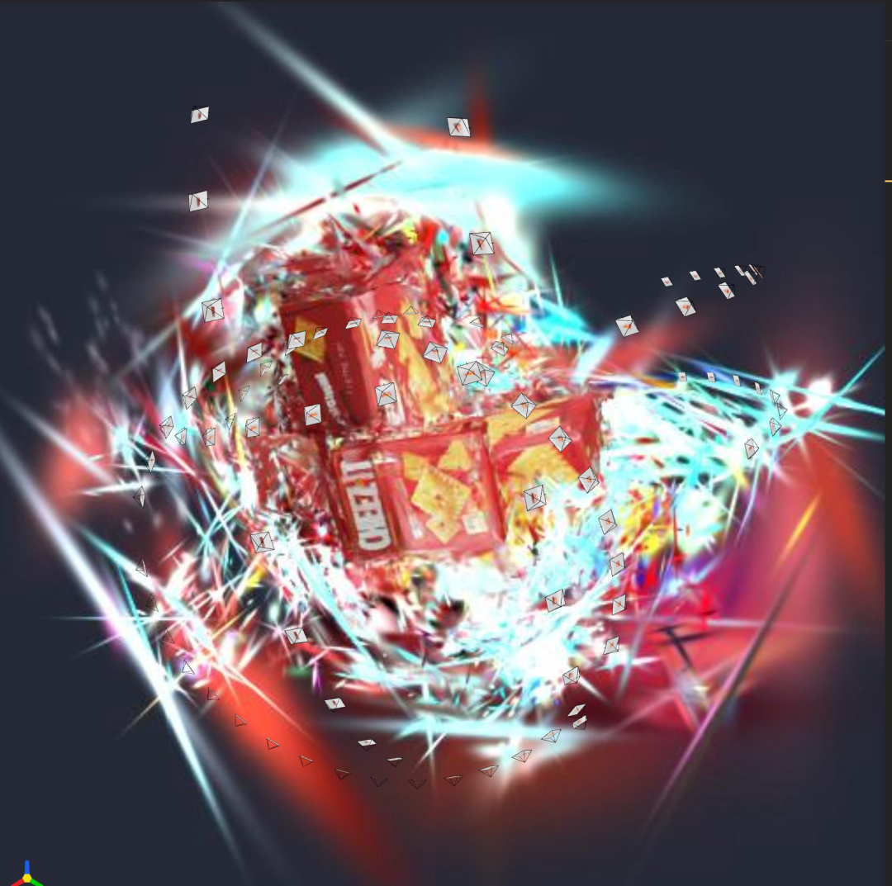

Lesson 05 · 背景 Floaters：成因与 Mask 治理
1 · 现象


用户的原始观察非常准确："训练刚开始没有灰白色背景球，训着训着从饼干盒周围生出来" ——这个"从周围长出来"的位置信息，正是定位成因的关键线索（见 §3）。
2 · 数据证据：高斯数量的爆炸曲线
0 GSs split —— 增殖已被切断。3 · 机制：一条恶性循环链
循环为什么停不下来：位姿误差 18 cm 是共犯
如果所有照片对"桌面在哪"意见一致，背景最终能收敛成一块干净的平面，梯度会降下去，分裂自然停止 （真值版正是这样）。但 COLMAP 位姿误差 18 cm —— 每张照片眼里的桌面位置都不一样， 不存在一个能同时满足所有照片的背景解 → 梯度永远不降 → 分裂永远不停。
为什么"从盒子周围生出来"
densification 优先分裂误差最大的区域。物体边缘（阴影、接触面、半透明轮廓） 是全图误差峰值所在 → 最先分裂 → 新高斯从边缘向外蔓延进背景。 这就是用户观察到"从饼干盒周围生出来"的原因，也是 3DGS 文献里典型的 floaters / background foam。
4 · 解决方案
4.1 第一道：清理初始点云（训练前）
降 peak_threshold 救注册率的副作用：白桌面上也提出噪声特征，
初始点云 22% 是远处杂点、37% 是灰色桌面点。两道过滤（均不需真值）：
- track 长度过滤：被 < 3 张图看到的点大多是误匹配产物 → 丢 1,151 个
- 统计离群剔除（open3d）→ 再丢 159 个
4923 → 3,613 (scripts/28_filter_colmap_init.py)
4.2 第二道：Mask（训练中，核心手段）
原理一句话：把 GT 图和渲染图在 mask 外同时置黑 → 背景区域 loss = 0 → 梯度 = 0 → densification 永不触发。切断循环链的第一环。
代码链路（nerfstudio 实测，5 步）
- 生成：
29_make_colmap_masks.py— 色度阈值max(RGB)-min(RGB) > 40+binary_fill_holes填洞 → 单通道 PNG（物体 255 / 背景 0） - 配对：
colmap_dataparser.py:178-181— 按同名 + .png 找 mask - 读取：
data_utils.py:35—.bool()把 0/255 转成 False/True （所以 255 不会把 loss 乘爆） - 上 GPU：
full_images_datamanager.py:131—--pipeline.datamanager.masks-on-gpu True→ 进入batch["mask"] - 生效：
splatfacto.py:707-715—gt_img *= mask; pred_img *= mask
mask 生成本身有两个坑
① 不能用"非白"阈值：实测桌面亮度 207~214，任何"不是纯白就算物体"的规则都会把整张桌子判成物体。 必须用色度（物体是饱和的红/黄，桌面是灰白）。
② 盒子自身的白色印刷区会被误排除：CHEEZ-IT 文字的白底色度极低 → mask 中间出现黑洞
→ 那些像素没有 loss → 盒子表面重建出洞。解法：binary_fill_holes
把被物体剪影完全包围的背景区填掉（纯形态学操作，无需真值）。
5 · 效果核对
| 指标 | 无 mask | 有 mask |
|---|---|---|
| 初始高斯 | 3,613 | 3,613（同一点云） |
| step 1600 | 34,279 | ~15,000 |
| step 8900 | 480,673（仍指数增长） | — |
| step 14900 | — | 35,638（0 split，已稳定） |
| 视觉 | 大团灰白 floaters 包围物体 | floaters 消失，物体轮廓干净 |
无 mask 版在 step 1600 就达到了 mask 版训到 14900 步的总量—— 之后多出来的 45 万个高斯，全部是背景泡沫。
6 · 可复用经验
看到"训着训着长出雾"
先看日志 Now having X GSs 的增速。指数增长 = 背景区域梯度失控，
光调参数（cull 阈值、scale 正则）只是止血，要切断 loss 来源（mask / 背景）。
mask 是"解释权"的取舍
加了 mask，背景就不再被建模——物体悬浮、没有环境。对抓取这正是想要的； 对场景级重建则不适用。先想清楚你要什么。
阈值要用对物理量
"物体 vs 背景"的区别是色度（饱和度）不是亮度。 先采样实测背景的亮度/色度分布，再定阈值——拍脑袋定 240 会把整张桌子框进去。
floaters 的根因排序
① 背景无约束被强行解释（mask 可治）② 位姿误差让背景无解（治本要修位姿） ③ 初始点云混入背景种子（训前清理）。三个一起治，缺一可能复发。